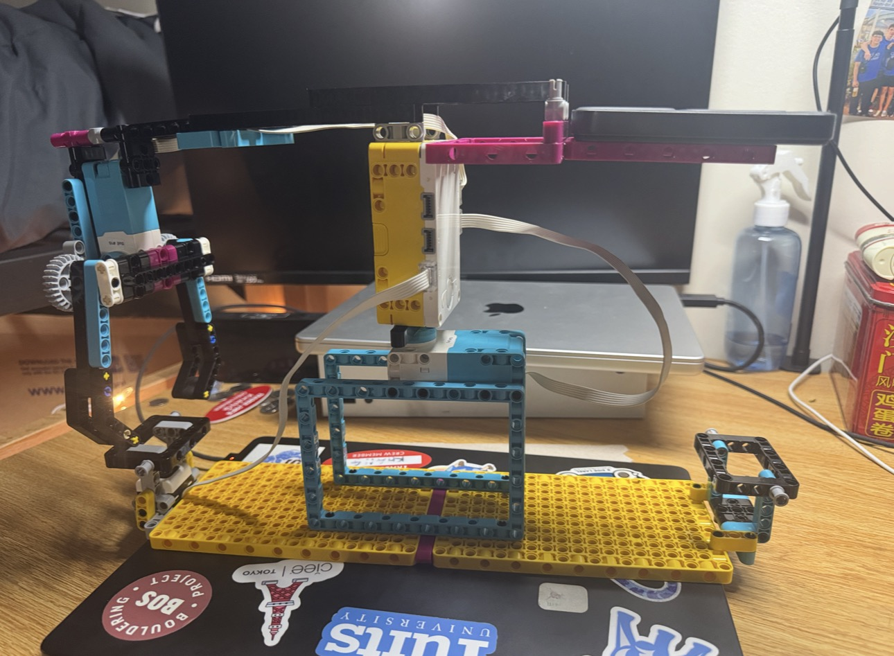

I based this design on my biomimicry project: I made a crane system that opens and closes like an ant's mouth, using a claw-like design. Instead of using a large motor, I experimented with a medium motor because the mechanism was too heavy and drooped when I used my crane system.
After building it, I realized the droop made it difficult for the motor to rotate around the center. This led me to think about physics and torque. There was much more torque on the claw side than on the other side, so I extended the right side, created a platform, and added heavier parts to create similar torque and keep the top axis flush with the table.
The coding was easier than I expected. I was able to make it run step by step and then reset to its original sequence. One thing I found confusing was why the motor rotates a little, stops, and then keeps rotating. I wondered whether this was because I used the motors' internal degree measurements rather than yaw or pitch. Setting up the degree-based movement was straightforward when prompting the code.
I think this was a successful project, but there are other approaches I'd like to try or explore by revising the design next time.
# Color Sensor: port E
# Medium Motor: port B
# Large Motor: port D
from hub import port
import runloop
import motor
import color
import color_sensor
async def main():
# Wait until the Color Sensor detects red.
while color_sensor.color(port.E) != color.RED:
await runloop.sleep_ms(50)
# Open the Medium Motor mechanism for 2300 milliseconds.
await motor.run_for_time(port.B, 2300, -222)
# Turn the Large Motor backward 90 degrees.
await motor.run_for_degrees(port.D, -90, 20)
# Close the mechanism by running the Medium Motor the opposite way.
await motor.run_for_time(port.B, 2300, 222)
# Turn the Large Motor forward 180 degrees.
await motor.run_for_degrees(port.D, 180, 20)
# Open the Medium Motor mechanism.
await motor.run_for_time(port.B, 2300, -222)
# Turn the Large Motor backward 90 degrees.
await motor.run_for_degrees(port.D, -90, 20)
# Close the Medium Motor mechanism.
await motor.run_for_time(port.B, 2300, 222)
runloop.run(main())